Introduction
ThinkData Works is a Toronto-based startup that builds a data governance platform. The platform’s source catalog lets organizations maintain a record all data sources that they import data from.
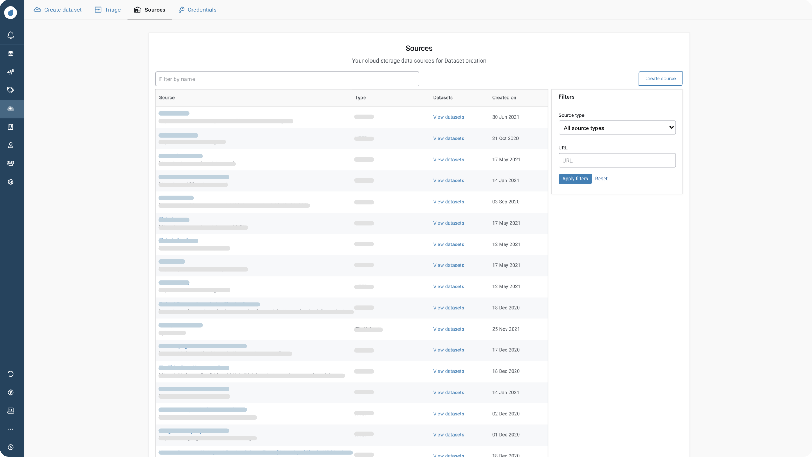
ThinkData’s source catalog
Project Type
ThinkData Works | Internship project
Role
Lead Product Designer
Skills
UI/UX Design, Interaction Design
Team
1 Product Manager & Engineer
Timeline
6 weeks
The Create Source form is used to create a new record for a data source in the source catalog, but there were two problems.
The form was difficult for non-technical users to understand
Non-technical users are users without a background in data engineering (e.g. a project manager). They may have questions such as: What are warehouses? What is an ingestion schedule? It was difficult for non-technical users to understand what inputs were required.
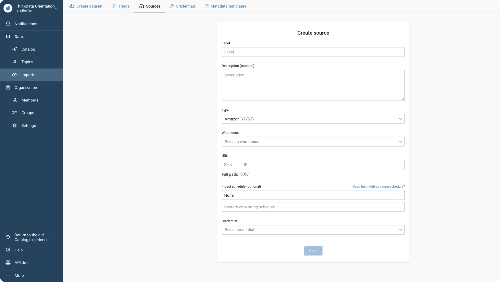
The task flow was not optimized for completion
In the current form, users must select a valid credential to complete the form. If a credential does not exist for the source, the user must cancel the form, create the credential, and return to start the form again.
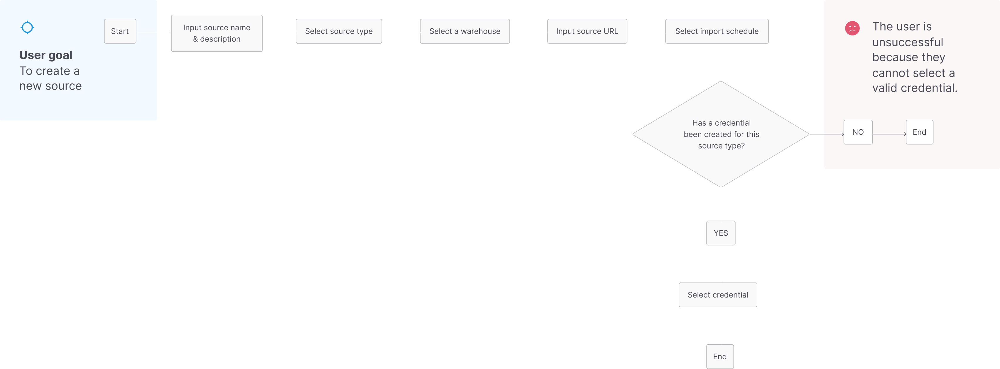
Optimizing the task flow
I started with task flows to ensure the form could be completed and that the form structure was made intuitive before committing to any UI.
Optimizing for successful form completion
Users expect to create a credential if they are unable to select from existing credentials.
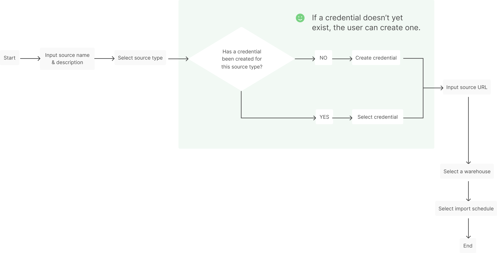
Improving form sequence
Non-technical users didn’t realize these fields were related to each another because they were not logically sequenced.
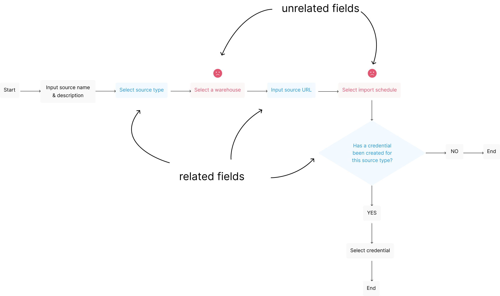
I redesigned the task flow so that related fields were in proximity to one another.
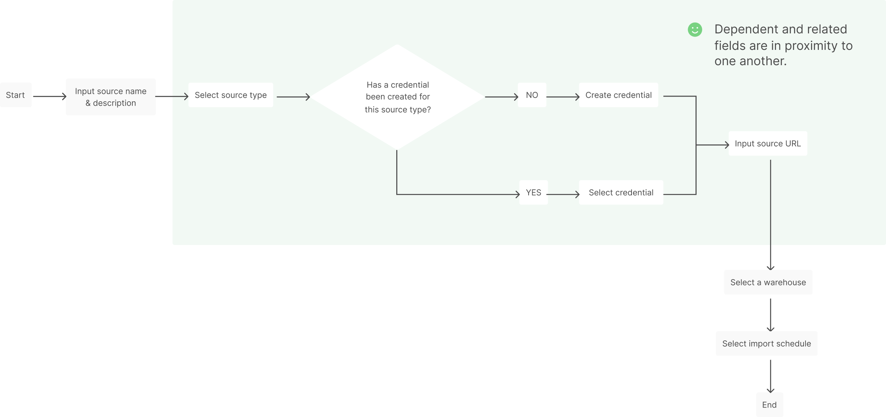
Form UI explorations: 2 extremes
Although I explored many different form UI options, these two were the most critical to informing the final solution. On one end, I met the criteria of our task flow. On the other end, I explored something entirely new.
Meeting our task flow criteria
In the first option, related fields are logically sequenced and users have the option to create a credential if they haven’t already.
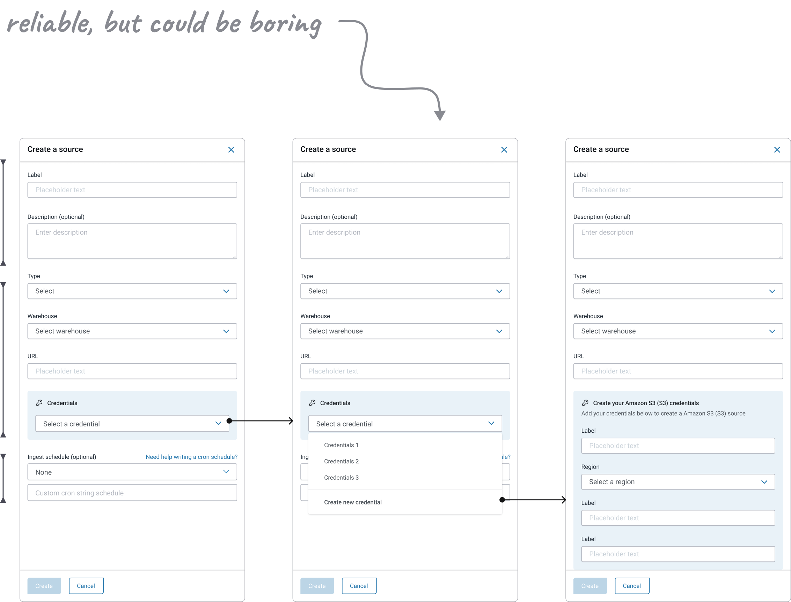
Exploring something entirely new
Once it was established that we could meet our basic task flow criteria, I could explore other UI patterns.
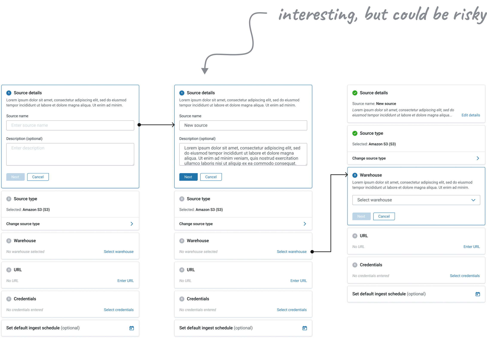
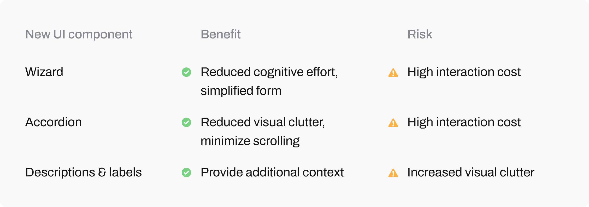
Final form UI: Finding the middle ground
I needed to find the middle ground. The final solution used a measured combination of wizard, accordion, description & label components to support items in the form that non-technical users had difficulty with.
I asked stakeholders if there were particular high effort items in the form that non-technical users have difficulty with. These were my key insights:
It was easy for users to understand what was required in the source name and description fields
It was difficult for users to understand what was required in the other fields and users didn’t realize they were configuring defaults for the source
Additionally, users may have questions such as:
What is ingestion?
What is a credential used for?
What is a warehouse?
What is an ingestion schedule?
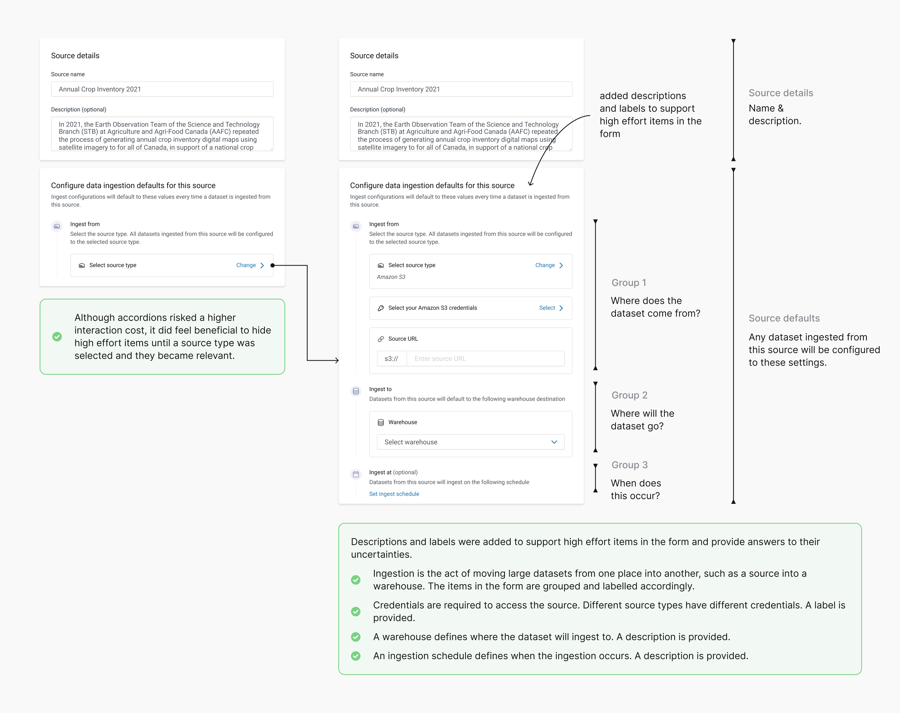
3 iterations of selecting a source type
UI for selecting a source type went through several iterations to support scalability and user comprehension.
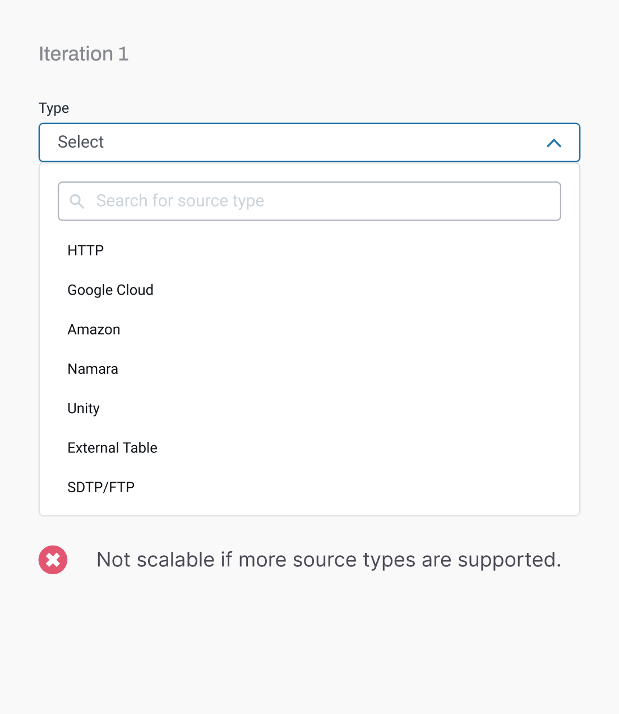
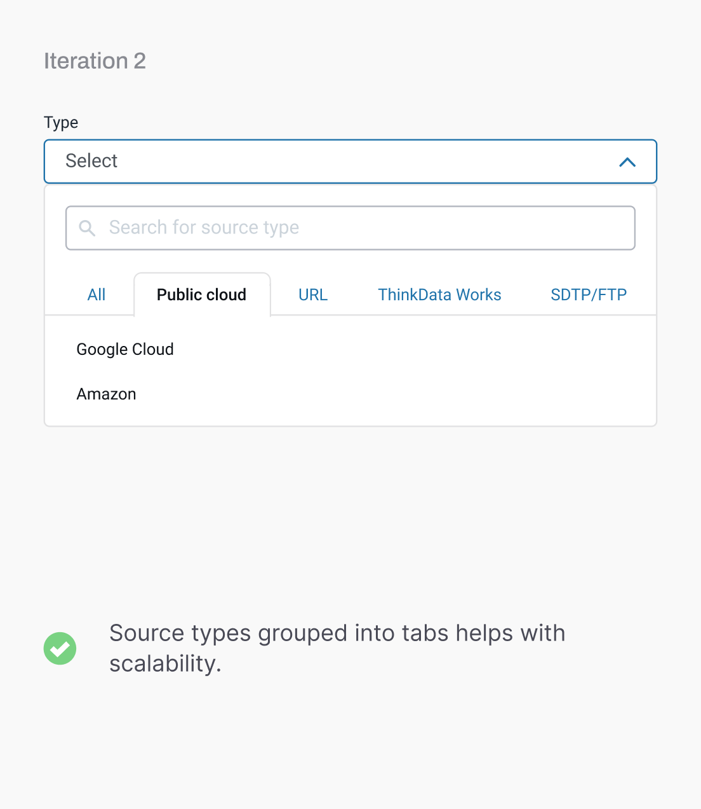
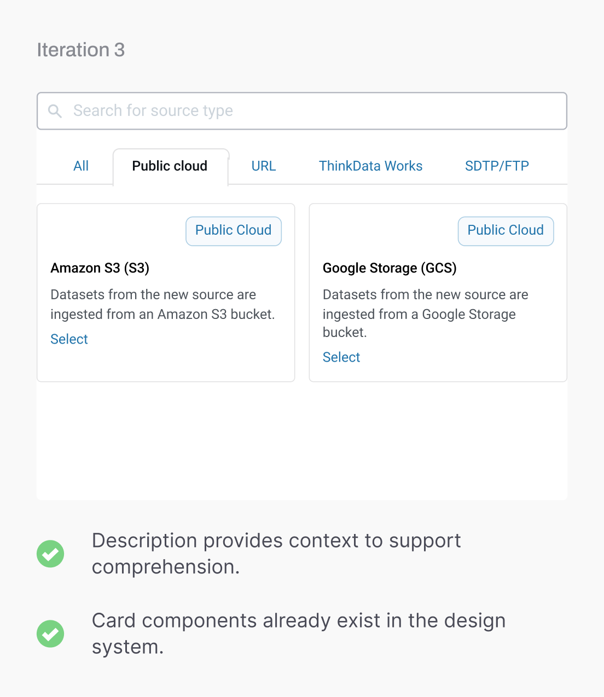
The final form prototype

Learnings
Overcoming early startup challenges
At an early-stage startup, I didn't have a user research team or direct access to our clients for research. I used competitive analysis and relied on stakeholders to discuss client needs and adhere to a user-centred design process.
The benefits of exploring something crazy
I took the opportunity to explore a UI pattern that deviated from our design system and was different than what had been done in the past. At first, it felt unviable, but it opened up a more insightful discussion with the rest of my team.